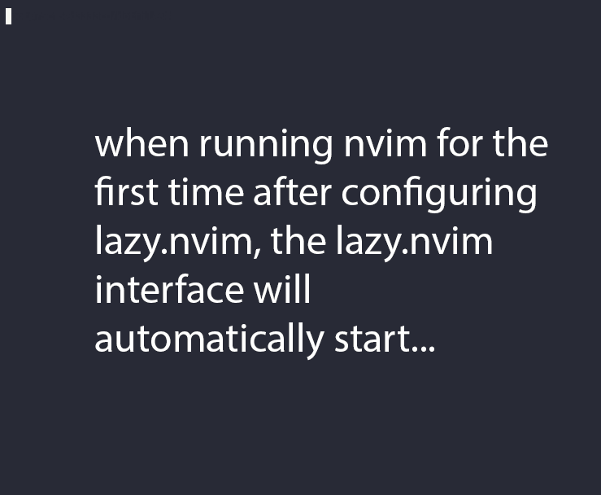
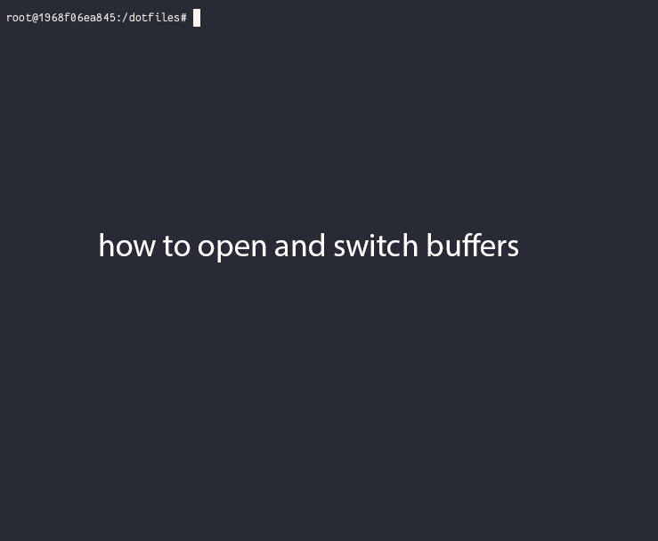

Vim (neovim) configuration¶
See Why? for why nvim (short for Neovim) instead of vim.
This page documents my nvim configuration. Because the nvim community (specifically, the plugin community) moves so quickly, this config and these accompanying docs change more often than any other configs in this repo.
You can take these new changes for a test drive by running
./setup.sh --nvim-test-drive
to move existing nvim config and plugins to backup directories. This does not affect any other config (like bash). You can always roll back to what you had before. The commands to roll back are printed at the end of the command.
Note
See Migrating to Neovim Lua config and Why Lua if you’re coming here from using older versions of these dotfiles that used vimscript instead of Lua.
Files¶
Changed in version 2024-09-01: Updated nvim installation version to 0.10.1 for macOS
Changed in version 2024-09-20: Modularized configuration: split up config files according to structured setup recommendations from lazy.nvim.
The nvim configuration is split over multiple files. This keeps any changes more tightly confined to individual files, which makes it easier to see what changed, and decide if you want it or not. It also enables us to import the files into this documentation to easily view them on an individual plugin basis. Hopefully this better makes the connection between the description and the config, encouraging better understanding. Unfold each file below to see the details.
init.lua
The file .config/nvim/init.lua is the entry point of the nvim config.
This in turn loads files in the lua subdirectory. For example, the
syntax require("config.lazy") will load
.config/nvim/lua/config/lazy.lua.
-- Lua config for neovim. Coming from Vim lanuage? See
-- https://neovim.io/doc/user/lua.html for the basics.
-- leader must be set before plugins are set up.
vim.cmd("let mapleader=','") -- Re-map leader from default \ to , (comma)
vim.cmd("let maplocalleader = '\\'") -- Local leader becomes \.
-- This allows nvim-tree to be used when opening a directory in nvim.
vim.g.loaded_netrw = 1
vim.g.loaded_netrwPlugin = 1
vim.cmd("set termguicolors") -- use full color in colorschemes
require("config.lazy")
require("config.options")
-- Colorscheme.
-- Add your favorite colorscheme to lua/plugins/colorscheme.lua (which will be
-- loaded with `config.lazy` above), and then use it here.
vim.cmd("colorscheme zenburn")
-- Uncomment these lines if you use a terminal that does not support true color:
-- vim.cmd("colorscheme onedark")
-- vim.cmd("set notermguicolors")
require("config.keymaps")
require("config.autocmds")
-- vim: nowrap
lua/config/lazy.lua
.config/nvim/lua/config/lazy.lua loads the lazy.nvim plugin manager. The plugins in the
.config/nvim/lua/plugins directory are loaded here.
-- Bootstrap lazy.nvim
local lazypath = vim.fn.stdpath("data") .. "/lazy/lazy.nvim"
if not (vim.uv or vim.loop).fs_stat(lazypath) then
local lazyrepo = "https://github.com/folke/lazy.nvim.git"
local out = vim.fn.system({ "git", "clone", "--filter=blob:none", "--branch=stable", lazyrepo, lazypath })
if vim.v.shell_error ~= 0 then
vim.api.nvim_echo({
{ "Failed to clone lazy.nvim:\n", "ErrorMsg" },
{ out, "WarningMsg" },
{ "\nPress any key to exit..." },
}, true, {})
vim.fn.getchar()
os.exit(1)
end
end
vim.opt.rtp:prepend(lazypath)
require("lazy").setup({
spec = {
-- imports all *.lua files in the plugins/ directory
{ import = "plugins" },
},
checker = { enabled = false },
})
lua/config/options.lua
.config/nvim/lua/config/options.lua sets global options.
-- Global options.
vim.opt.syntax = "on" -- Syntax highlighting; also does an implicit filetype on
vim.opt.foldenable = false -- Files will open with everything unfolded
vim.opt.backspace = "indent,eol,start" -- Make backspace work as expected in some situations
vim.opt.smarttab = true -- Insert spaces according to shiftwidth at the beginning of each line
vim.opt.expandtab = true -- <Tab> inserts spaces, not "\t"
vim.opt.scrolloff = 3 -- Keep some lines above and below cursor to keep it visible
vim.opt.list = true -- Show non-printing characters
vim.opt.showmatch = true -- Show matching parentheses
vim.opt.nu = true -- Show line numbers
vim.opt.showmode = false -- The lualine plugin provides modeline for us
-- In addition to allowing clicking and scrolling, vim.opt.mouse = "a" also:
-- * Supports mouse-enabled motions. To try this, left-click to place the
-- cursor. Type y then left-click to yank from current cursor to where you
-- next clicked.
-- * Drag the status-line or vertical separator to resize
-- * Double-click to select word; triple-click for line
vim.opt.mouse = "a"
-- Change the behavior of various formatting.
-- Explanation of these options; see :h formatoptions for more info.
-- q: gq also formats comments
-- r: insert comment leader after <Enter> in insert mode
-- n: recognize numbered lists
-- 1: don’t break a line after a 1-letter word
-- c: autoformat comments
-- o: automatically insert comment leader afer ‘o’ or ‘O’ in Normal mode.
-- j: where it makes sense, remove a comment leader when joining lines
vim.opt.formatoptions="qrn1coj"
vim.opt.hidden = true -- Open a new buffer without having to save first
vim.opt.swapfile = false -- Disable swap file creation. Keep enabled for huge files (:set swapfile)
vim.opt.ignorecase = true -- Ignore case when searching...
vim.opt.smartcase = true -- ...unless at least one character is uppercase
vim.opt.hlsearch = false -- Don't highlight search items by default
vim.opt.wildmenu = true -- Make tab completion for files/buffers act like bash
vim.opt.wildmode="list:full" -- Show a list when pressing tab; complete first full match
vim.opt.wildignore:append("*.swp,*.bak,*.pyc,*.class") -- Ignore these when autocompleting
vim.opt.cursorline = true -- Highlight line where the cursor is
vim.opt.fillchars:append { diff = "╱" } -- in diffs, show deleted lines with slashes rather than dashes
vim.opt.signcolumn = "yes" -- always show the signcolumn to minimize distraction of appearing and disappearing
-- vim.cmd(":autocmd InsertEnter * set cul") -- Color the current line in upon entering insert mode
-- vim.cmd(":autocmd InsertLeave * set nocul") -- Remove color upon existing insert mode
-- vim.cmd("set guicursor=i:block") -- Always use block cursor. In some terminals and fonts (like iTerm), it can be hard to see the cursor when it changes to a line.
-- Copy all yanked/deleted lines to the "+" buffer. Useful when you want to use
-- the OS clipboard.
vim.cmd("set clipboard=unnamedplus")
lua/config/autocmds.lua
.config/nvim/lua/config/autocmds.lua configures autocommands –
settings that are specific to a filetype or that should be triggered on
certain events.
-- Autocommands.
-- Display nonprinting characters (tab characters and trailing spaces).
vim.cmd(":autocmd InsertEnter * set listchars=tab:>•")
-- Also show trailing spaces after exiting insert mode
vim.cmd(":autocmd InsertLeave * set listchars=tab:>•,trail:∙,nbsp:•,extends:⟩,precedes:⟨")
-- Set the working directory to that of the opened file
vim.cmd("autocmd BufEnter * silent! lcd %:p:h")
-- <leader>d inserts a header for today's date. Different commands depending on
-- the format of the filetype (ReStructured Text or Markdown)
vim.api.nvim_create_autocmd("Filetype", {
pattern = "rst",
callback = function()
vim.keymap.set(
{ "n", "i" },
"<leader>d",
'<Esc>:r! date "+\\%Y-\\%m-\\%d"<CR>A<CR>----------<CR>',
{ desc = "Insert date as section title" }
)
vim.keymap.set(
"n",
"<leader>p",
'i` <>`__<Esc>F<"+pF`a',
{ desc = "Paste a ReST-formatted link from system clipboard" }
)
end,
})
-- (R)Markdown-specific mappings
vim.api.nvim_create_autocmd("Filetype", {
pattern = { "markdown", "rmd" },
callback = function()
vim.keymap.set(
{ "n", "i" },
"<leader>d",
'<Esc>:r! date "+\\# \\%Y-\\%m-\\%d"<CR>A',
{ desc = "Insert date as section title" }
)
vim.keymap.set(
"n",
"<leader>p",
'i[]()<Esc>h"+pF]i',
{ desc = "Paste a Markdown-formatted link from system clipboard" }
)
end,
})
-- Tell nvim about the snakemake filetype
vim.filetype.add({
filename = {
["Snakefile"] = "snakemake",
},
pattern = {
["*.smk"] = "snakemake",
["*.snakefile"] = "snakemake",
["*.snakemake"] = "snakemake",
["Snakefile*"] = "snakemake",
},
})
-- Set commentstring for snakemake, which is needed for vim-commentary
vim.api.nvim_create_autocmd("FileType", {
pattern = "snakemake",
callback = function() vim.cmd("set commentstring=#\\ %s") end,
})
-- Render RMarkdown in R running in terminal with <leader>k
vim.api.nvim_create_autocmd("FileType", {
pattern = { "rmarkdown", "rmd" },
callback = function()
vim.keymap.set(
"n",
"<leader>k",
":TermExec cmd='rmarkdown::render(\"%:p\")'<CR>",
{ desc = "Render RMar[k]down to HTML" }
)
vim.keymap.set(
"n",
"<leader>rm",
function ()
ft = vim.opt.ft:get()
if ft == "rmarkdown" or ft == "rmd" then
vim.cmd("set ft=markdown")
vim.cmd("RenderMarkdown enable")
end
if ft == "markdown" then
vim.cmd("set ft=rmarkdown")
vim.cmd("RenderMarkdown disable")
end
end,
{ desc = "Toggle render-markdown on an RMarkdown file" }
)
end,
})
-- Run Python code in IPython running in terminal
vim.api.nvim_create_autocmd("FileType", {
pattern = "python",
callback = function()
vim.keymap.set("n", "<leader>k", ":TermExec cmd='run %:p'<CR>", { desc = "Run Python file in IPython" })
end,
})
-- Briefly highlight yanked text
vim.api.nvim_create_autocmd("TextYankPost", {
callback = function()
vim.highlight.on_yank{higroup = "IncSearch", timeout=100}
end,
pattern = "*",
})
-- Modified from https://github.com/nvim-tree/nvim-tree.lua/wiki/Auto-Close.
-- If the last buffer(s) open are nvim-tree or trouble.nvim or aerial, then close them all and quit.
vim.api.nvim_create_autocmd("QuitPre", {
callback = function()
local close_wins = {}
local floating_wins = {}
local wins = vim.api.nvim_list_wins()
for _, w in ipairs(wins) do
local bufname = vim.api.nvim_buf_get_name(vim.api.nvim_win_get_buf(w))
if bufname:match("NvimTree_") ~= nil then -- nvim-tree buffer
table.insert(close_wins, w)
end
if bufname:match("Trouble") ~= nil then -- trouble.nvim buffer
table.insert(close_wins, w)
end
if bufname:match("Scratch") ~= nil then -- aerial buffer
table.insert(close_wins, w)
end
if vim.api.nvim_win_get_config(w).relative ~= "" then -- floating windows
table.insert(floating_wins, w)
end
end
-- If the buffer we are closing during this QuitPre action is the only one
-- that does not match the above patterns, then consider it the last text buffer,
-- and close all other buffers.
if 1 == #wins - #floating_wins - #close_wins then
for _, w in ipairs(close_wins) do
vim.api.nvim_win_close(w, true)
end
end
end,
})
lua/config/keymaps.lua
.config/nvim/lua/config/keymaps.lua configures keymappings that are
not otherwise configured in the individual plugin configs.
-- Keymappings.
-- These are general keymappings. For keymappings related to plugins, see
-- lua/plugins/*.lua. Many keymappings will have descriptions which will show
-- up in which-key.
--
-- In general, see the `desc` fields for the keymap description.
-- Set up labeled groupings in which-key
local wk = require('which-key')
wk.register( { ["<leader>c"] = { name = "+code" } } )
wk.register( { ["<leader>f"] = { name = "+file or +find" } } )
wk.register( { ["<leader>o"] = { name = "+obsidian" } } )
vim.keymap.set("t", "<Esc>", "<C-\\><C-n>") -- Fix <Esc> in terminal buffer
vim.keymap.set("n", "<Leader>H", ":set hlsearch!<CR>", { desc = "Toggle search highlight" })
vim.keymap.set("n", "<leader>W", ":%s/\\s\\+$//<cr>:let @/=''<CR>", { desc = "Clean trailing whitespace" })
vim.keymap.set({ "n", "i" }, "<leader>R", "<Esc>:syntax sync fromstart<CR>", { desc = "Refresh syntax highlighting" })
vim.keymap.set({ "n", "i" }, "<leader>`", "<Esc>i```{r}<CR>```<Esc>O", { desc = "New fenced RMarkdown code block" })
vim.keymap.set(
{ "n", "i" },
"<leader>ts",
'<Esc>o<Esc>:r! date "+\\%Y-\\%m-\\%d \\%H:\\%M "<CR>A',
{ desc = "Insert timestamp" }
)
vim.keymap.set("n", "<leader>-", "80A-<Esc>d80<bar>", { desc = "Fill rest of line with -" })
vim.keymap.set("n", "<leader><tab>", ":set nowrap tabstop=", { desc = "Prepare for viewing TSV" })
-- Buffer navigation keymappings
vim.keymap.set("n", "<leader>1", ":bfirst<CR>", { desc = "First buffer" })
vim.keymap.set("n", "<leader>2", ":blast<CR>", { desc = "Last buffer" })
vim.keymap.set("n", "[b", ":bprevious<CR>", { desc = "Previous buffer" })
vim.keymap.set("n", "]b", ":bnext<CR>", { desc = "Next buffer" })
vim.keymap.set("n", "H", ":bprevious<CR>", { desc = "Previous buffer" })
vim.keymap.set("n", "L", ":bnext<CR>", { desc = "Next buffer" })
-- In preparation for copying, turn off various symbols and text that shouldn't
-- be copied, such as indent-blankline vertical lines, indicators of git
-- changes, and various virtual text and symbols. Also toggle line numbers.
--
-- In all cases, only disable things if the plugin is loaded in the first
-- place.
vim.keymap.set("n", "<leader>cp",
function()
if package.loaded["ibl"] ~= nil then
vim.cmd("IBLToggle")
end
if package.loaded["gitsigns"] ~= nil then
vim.cmd("Gitsigns toggle_signs")
end
if package.loaded["render-markdown"] ~= nil then
vim.cmd(":RenderMarkdown toggle")
end
vim.cmd("set nu!")
end,
{ desc = "Prepare for copying text to another program"}
)
-- Keymappings for navigating terminals.
-- <leader>q and <leader>w move to left and right windows respectively. Useful
-- when working with a terminal, or to aerial panels or nvim-tree panels. Works
-- even in insert mode; to enter a literal ',w' type more slowly after the
-- leader.
vim.keymap.set({ "n", "i" }, "<leader>w", "<Esc>:wincmd l<CR>", { desc = "Move to right window" })
vim.keymap.set({ "n", "i" }, "<leader>q", "<Esc>:wincmd h<CR>", { desc = "Move to left window" })
vim.keymap.set("t", "<leader>q", "<C-\\><C-n>:wincmd h<CR>", { desc = "Move to left window" })
-- Registers
vim.fn.setreg("l", "I'A',j") -- "listify": wrap with quotes and add trailing comma
lua/plugins/
Each plugin is described in more detail below in its own section. Each has
its own file in the .config/nvim/lua/plugins directory.
Screencasts¶
Added in version 2024-03-31.
Sometimes it’s much easier to see what’s going on than to read about it…
screencast of lazy.nvim setting up plugins
See Plugins for more details.
screencast of switching buffers
See Switching buffers for more; this uses bufferline.nvim for the tabs, nvim-tree for the file tree, and telescope for the fuzzy-finder.
Non-printing characters¶
Non-printing characters (tab characters and trailing spaces) are displayed. Differentiating between tabs and spaces is extremely helpful in tricky debugging situations.
~/.config/nvim/lua/config/autocmds.lua has these lines:
vim.cmd(":autocmd InsertEnter * set listchars=tab:>•")
vim.cmd(":autocmd InsertLeave * set listchars=tab:>•,trail:∙,nbsp:•,extends:⟩,precedes:⟨")
With these settings <TAB> characters look like >••••. Trailing spaces show up
as dots like ∙∙∙∙∙.
The autocmds here mean that we only show the trailing spaces when we’re outside of insert mode, so that every space typed doesn’t show up as trailing. When wrap is off, the characters for “extends” and “precedes” indicate that there’s text offscreen.
Switching buffers¶
Added in version 2023-11-01: <leader>b using bufferline plugin
Three main ways of opening file in a new buffer:
command |
description |
|---|---|
:e <filename> |
Open filename in new buffer |
<leader>ff |
Search for file in directory to open in new buffer (Telescope) |
<leader>fb |
Toggle file browser, hit Enter on file (nvim-tree) |
See nvim-tree for more on navigating the file tree shown by <leader>fb.
Once you have multiple buffers, you can switch between them in these ways:
command |
description |
|---|---|
[b, ]b |
Prev and next buffers |
H, L |
Prev buffer, next buffer |
<leader>1, <leader>2 |
First buffer, last buffer |
<leader>b then type highlighted letter in tab |
Switch buffer |
The display of the bufferline is configured in
lua/plugins/bufferline.lua, as part of the bufferline plugin. It is
additionally styled using the zenburn.nvim plugin/colorscheme.
Format options explanation¶
The following options change the behavior of various formatting; see :h formatoptions:
vim.opt.formatoptions = "qrn1coj"
Explanation of these options:
q: gq also formats comments
r: insert comment leader after <Enter> in insert mode
n: recognize numbered lists
1: don’t break a line after a 1-letter word
c: autoformat comments
o: automatically insert comment leader afer ‘o’ or ‘O’ in Normal mode.
Use Ctrl-u to quickly delete it if you didn’t want it.
j: where it makes sense, remove a comment leader when joining lines
Spell check¶
In case you’re not aware, vim has built-in spellcheck.
command |
description |
|---|---|
|
Enable spell check |
]s |
Next spelling error |
[s |
Previous spelling error |
z= |
Show spelling suggestions |
Shortcuts¶
Changed in version 2024-01-21: Added <leader>p for pasting formatted Markdown/ReST links
Changed in version 2024-03-31: Added <leader>cp for a convenient “copy mode”
Changed in version 2024-09-01: <leader>cp is more complete (toggles render-markdown and sign columns, too)
Here are some general shortcuts that are defined in the included config. With
the which-key plugin, many of these are also discoverable by hitting the
first key and then waiting a second for the menu to pop up.
Note
Mappings that use a plugin are configured in the plugin’s respective file
in lua/plugins/ and are described below under the respective plugin’s
section.
If you’re defining your own keymappings, add a desc argument so that
which-key will provide a description for it.
command |
description |
|---|---|
, |
Remapped leader. Below, when you see <leader> it means ,. |
<leader>r |
Toggle relative line numbering (makes it easier to jump around lines with motion operators). |
<leader>H |
Toggle highlighted search. Sometimes it’s distracting to have all the highlights stick around. |
<leader>W |
Remove all trailing spaces in the file. Useful when cleaning up code to commit. |
<leader>R |
Refresh syntax highlighting. Useful when syntax highlighting gets wonky. |
@l |
Macro to surround the line with quotes and add a trailing comma. Useful for making Python or R lists out of pasted text |
<leader>- |
Fills in the rest of the line with “-”, out to column 80. Useful for making section separators. |
<leader><TAB> |
Useful for working with TSVs. Starts the command |
<leader>` |
(that’s a backtick) Adds a new RMarkdown chunk and places the cursor inside it |
<leader>ry |
Used for RMarkdown; writes commonly-used YAML front matter (mnemonic: rmarkdown yaml) |
<leader>ko |
Used for RMarkdown; writes an RMarkdown chunk with commonly-used knitr global options (mnemonic: knitr options) |
<leader>d |
Insert the current date as a ReST or Markdown-formatted title, depending on the file type. Useful when writing logs. |
<leader>p |
Paste the contents of the OS clipboard into a formatted link as appropriate for the file type (ReST and Markdown currently supported) and puts the cursor in the link description. Note that this will not work to paste to vim on a remote server, unless you do tricky things with X forwarding, so consider it local-only. |
<leader>cp |
Toggle a sort of “copy mode”. Turns off line numbers, the vertical indentation lines from indent-blankline, any sign columns, and render-markdown (if enabled) so you can more easily copy text into another app. |
Plugins¶
The plugins configured in lua/plugins/*.lua have lots and lots of
options. Here I’m only highlighting the options I use the most, but definitely
check out each homepage to see all the other weird and wonderful ways they can
be used.
Plugins are now configured using lazy.nvim. This supports lazy-loading of plugins to keep a snappy startup time, and only load plugins when they’re needed. See Migrating to Neovim Lua config for my rationale on that.
Each plugin spec in lua/plugins/*.lua is a table. The first property is
the name of the plugin. Other properties:
lazy: only load when requested by something else. Saves on initial load time, but use this with care since it can get confusing.ft: only load the plugin when editing this filetype. Implies lazy=true.cmd: only load the plugin when first running this command. Implies lazy=true.keys: only load the plugin when using these keymappings. Implies lazy=true.config: run this stuff after the plugin loads. If config = true, just run the default setup for the plugin.init: similar to config, but used for pure-vim plugins
If keys are specified, this is the only place they need to be mapped, and they
will make their way into the which-key menu even if they trigger a lazy-loaded
plugin. Use the desc argument to give which-key a description to use.
Here, plugins are sorted roughly so that the ones that provide additional commands come first.
Note
Don’t like a plugin? Find it in lua/plugins.lua and add enabled
= false next to where the plugin is named. For example:
-- ... other stuff
{ "user/plugin-name", enabled = false },
-- ... more stuff
Or delete it, or comment it out.
The vim config has changed over the years. Depending on when you last updated, there may be plugins added or removed or changed in some way. This table keeps track of what has changed recently.
plugin |
date added |
date changed |
description |
|---|---|---|---|
2016 |
2024-10-24 (removed) |
makes tmux play nicer with vim clipboard |
|
2017 |
nice indentation for python |
||
2018-09-26 |
a wonderful and powerful interface for git, in vim |
||
2019-02-27 |
additional diff algorithms |
||
2019-03-27 |
makes markdown and restructured text tables easy |
||
2019-09-30 |
replace text in visual selections |
||
2021-02-14 |
git log viewer |
||
2021-02-14 |
sane approach to handling merge conflicts in git |
||
2022-12-27 |
2024-03-31 |
open a terminal inside vim and send text to it |
|
2022-12-27 |
add and change surrounding characters easily |
||
2023-10-10 |
provides a file browser window in vim |
||
2023-10-11 |
a wonderful tool for exploring git history |
||
2023-10-15 |
speeds up vertical navigation |
||
2023-10-15 |
2023-09-01 |
flash a beacon where the cursor is |
|
2023-10-15 |
unobtrusively indicate git changes within a file |
||
2023-10-15 |
show vertical lines at tab stops |
||
2023-10-15 |
autocomplete |
||
2023-10-15 |
a menu tool for picking (selecting files, etc) |
||
2023-10-15 |
easily comment/uncomment |
||
2023-10-15 |
2024-09-01 |
automated help for keymappings |
|
2023-10-15 |
optional navigational menu for navigating large files |
||
2023-10-15 |
provides parsers for advanced syntax and manipulation |
||
2023-11-01 |
2024-09-01 |
ergonomic buffer management |
|
2023-11-01 |
statusline |
||
2023-11-01 |
tool for easily installing LSPs, linters, and other tools |
||
2023-11-01 |
2024-03-31 |
handles the configuration of LSP servers |
|
2023-11-01 |
provides a separate window for diagnostics from LSPs |
||
2023-11-01 |
colorscheme |
||
2024-03-31 |
run linters and code formatters |
||
2024-03-31 |
rapidly jump to places in code without counting lines |
||
2024-04-27 |
indicator that LSP is running |
||
2024-04-27 |
prevents buffers from opening within a terminal |
||
2024-09-01 |
provides nice editing and navigation tools for markdown |
||
2024-09-01 |
fancy rendering of markdown files |
Sometimes there are better plugins for a particular functionality. I’ve kept the documentation, but noted when they’ve been deprecated here and in the linked description.
plugin |
date added |
deprecated |
|---|---|---|
2022-12-27 |
deprecated 2024-03-31 in favor of flash |
|
2019-02-27 |
deprecated 2023-11-14 in favor of treesitter |
|
2019-02-2 |
deprecated 2023-11-14 in favor of treesitter |
|
2019-02-27 |
deprecated 2023-11-14 in favor of treesitter |
vim-commentary¶
Added in version 2023-10-15.
Config
This can be found in .config/nvim/lua/plugins/vim-commentary.lua:
-- vim-commentary toggles comments
return {
{ "tpope/vim-commentary" },
}
vim-commentary lets you easily toggle comments on lines or blocks of code.
command |
description |
|---|---|
gc on a visual selection |
toggle comment |
gcc on a single line |
toggle comment |
beacon¶
Added in version 2023-10-15.
Changed in version 2023-11-07: Only commands below will trigger the beacon
Changed in version 2024-09-01: Pinned version to latest prior to Lua rewrite (which is making configuration more difficult)
Config
This can be found in .config/nvim/lua/plugins/beacon.lua:
-- flash a beacon to show where you are
return {
{
"danilamihailov/beacon.nvim",
-- later versions are lua-only and not as nice to configure
commit = "5ab668c4123bc51269bf6f0a34828e68c142e764",
-- don't lazy load -- otherwise, on first KJ you get a double-flash
lazy = false,
config = function()
-- Disable the beacon globally; only the commands below will activate it.
vim.cmd("let g:beacon_enable=0")
end,
keys = {
{ "<S-k><S-j>", ":Beacon<CR>", desc = "Flash beacon" },
{ "N", "N:Beacon<CR>", desc = "Prev search hit and flash beacon" },
{ "n", "n:Beacon<CR>", desc = "Next search hit and flash beacon" },
{ "%", "%:Beacon<CR>", desc = "Go to matching bracket and flash beacon" },
{ "*", "*:Beacon<CR>", desc = "Go to next word occurrence and flash beacon" },
},
},
}
Beacon provides an animated marker to show where the cursor is.
command |
description |
|---|---|
KJ (hold shift and tap kj) |
Flash beacon |
n or N after search |
Flash beacon at search hit |
telescope¶
Added in version 2023-10-15.
Config
This can be found in .config/nvim/lua/plugins/telescope.lua:
-- telescope provides a pop-up window used for fuzzy-searching and selecting
return {
{
"nvim-telescope/telescope.nvim",
dependencies = {
"nvim-lua/plenary.nvim",
},
cmd = "Telescope",
keys = {
{
"<leader>ff",
function()
-- use a previewer that doesn't show each file's contents
local previewer = require("telescope.themes").get_dropdown({ previewer = false })
require("telescope.builtin").find_files(previewer)
end,
desc = "[f]ind [f]iles",
},
{ "<leader>fg", "<cmd>Telescope live_grep<cr>", desc = "[f]ind with [g]rep in directory" },
{ "<leader>/", "<cmd>Telescope current_buffer_fuzzy_find<cr>", desc = "Fuzzy find in buffer" },
{ "<leader>fc", "<cmd>Telescope treesitter<CR>", desc = "[f]ind [c]ode object" },
{ "<leader>fr", "<cmd>Telescope oldfiles<CR>", desc = "[f]ind [r]ecently-opened files" },
},
},
}
Telescope opens a floating window with fuzzy-search selection.
Type in the text box to filter the list. Hit enter to select (and open the selected file in a new buffer). Hit Esc twice to exit.
command |
description |
|---|---|
<leader>ff |
Find files under this directory. Handy alternative to |
<leader>fg |
Search directory for string. This is like using ripgrep, but in vim. Selecting entry takes you right to the line. |
<leader>/ |
Fuzzy find within buffer |
<leader>fc |
Find code object |
<leader>fo |
Find recently-opened files |
Other useful things you can do with Telescope:
:Telescope highlightsto see the currently set highlights for the colorscheme.:Telescope builtinto see a picker of all the built-in pickers. Selecting one opens that picker. Very meta. But also very interesting for poking around to see what’s configured.:Telescope planetsto use a telescope:Telescope autocommands,:Telescope commands,:Telescope vim_options,:Telescope man_pagesare some other built-in pickers that are interesting to browse through.
nvim-tree¶
Added in version 2023-10-10.
Config
This can be found in .config/nvim/lua/plugins/nvim-tree.lua:
-- nvim-tree is a file browser that opens on the left side
return {
{
"nvim-tree/nvim-tree.lua",
-- don't lazy load; otherwise, opening a directory as first buffer doesn't trigger it.
lazy = false,
config = true,
keys = {
{ "<leader>fb", "<cmd>NvimTreeToggle<CR>", desc = "[f]ile [b]rowser toggle" },
},
},
}
nvim-tree is a file browser.
command |
description |
|---|---|
<leader>fb |
Toggle file browser |
- (within browser) |
Go up a directory |
Enter (within browser) |
Open file or directory, or close directory |
The window-switching shortcuts <leader>w and <leader>q (move to windows left and right respectively) also work
which-key¶
Added in version 2023-10-15.
Changed in version 2024-09-01: Pinned version; later versions are raising warnings that still need to be addressed
Config
This can be found in .config/nvim/lua/plugins/which-key.lua:
-- which-key pops up a window showing possible keybindings
return {
{
"folke/which-key.nvim",
-- later versions raise errors on conflicting keybindings
commit = "0539da005b98b02cf730c1d9da82b8e8edb1c2d2",
lazy = false,
config = true,
},
}
which-key displays a popup with possible key bindings of the command you started typing. This is wonderful for discovering commands you didn’t know about, or have forgotten.
The window will appear 1 second after pressing a key (this is configured with
vim.o.timeoutlen, e.g. vim.o.timeoutlen=500 for half a sectond). There
is no timeout though for registers (") or marks (') or spelling (z=
over a word).
You can hit a displayed key to execute the command, or if it’s a multi-key
command (typically indicated with a +prefix to show there’s more), then
that will take you to the next menu.
Use <Backspace> to back out a menu. In fact, pressing any key, waiting for the menu, and then hitting backspace will give a list of all the default mapped keys in vim.
There is currently no extra configuration. Instead, when a key is mapped
(either in lua/mappings.lua or lua/plugins.lua), an
additional parameter desc = "description of mapping" is included. This
allows which-key to show a description. Mappings with no descriptions will
still be shown.
-- example mapping using vim.keymap.set, with description
vim.keymap.set('n', '<leader>1', ':bfirst<CR>',
{ desc = "First buffer" })
-- example mapping when inside a plugin spec
{ "plugin/plugin-name",
keys = {
{ "<leader>1", ":bfirst<CR>", desc = "First buffer" },
}
}
command |
description |
|---|---|
any |
after 1 second, shows a popup menu |
<Backspace> |
Goes back a menu |
z= (over a word) |
Show popup with spelling suggestions, use indicated character to select |
' |
Show popup with list of marks |
" |
Show popup with list of registers |
accelerated-jk¶
Added in version 2023-10-15.
Config
This can be found in .config/nvim/lua/plugins/accelerated-jk.lua:
-- speeds up vertical navigation with j and k
return {
{
"rhysd/accelerated-jk",
keys = {
{ "j", "<Plug>(accelerated_jk_gj)" },
{ "k", "<Plug>(accelerated_jk_gk)" },
},
config = function()
-- see :help accelerated_jk_acceleration_table
vim.cmd("let g:accelerated_jk_acceleration_table = [7, 13, 20, 33, 53, 86]")
end,
},
}
accelerated-jk speeds up j and k movements: longer presses will jump more and more lines.
Configured in lua/plugins.lua. In particular, you might want to tune
the acceleration curve depending on your system’s keyboard repeat rate settings
– see that file for an explanation of how to tweak.
command |
description |
|---|---|
j, k |
Keep holding for increasing vertical scroll speed |
nvim-cmp¶
Added in version 2023-10-15.
Config
This can be found in .config/nvim/lua/plugins/nvim-cmp.lua:
-- nvim-cmp provides tab completion for many things
return {
{
"hrsh7th/nvim-cmp",
dependencies = {
"hrsh7th/cmp-nvim-lsp",
"hrsh7th/cmp-buffer",
"hrsh7th/cmp-path",
"saadparwaiz1/cmp_luasnip",
"L3MON4D3/LuaSnip",
},
event = "InsertEnter",
opts = function()
local has_words_before = function()
unpack = unpack or table.unpack
local line, col = unpack(vim.api.nvim_win_get_cursor(0))
return col ~= 0 and vim.api.nvim_buf_get_lines(0, line - 1, line, true)[1]:sub(col, col):match("%s") == nil
end
local cmp = require("cmp")
local defaults = require("cmp.config.default")()
local luasnip = require("luasnip")
return {
completion = { autocomplete = false },
snippet = {
expand = function(args)
require("luasnip").lsp_expand(args.body)
end,
},
mapping = cmp.mapping.preset.insert({
["<C-e>"] = cmp.mapping.abort(),
["<CR>"] = cmp.mapping.confirm({ select = false }),
["<Tab>"] = cmp.mapping(function(fallback)
if cmp.visible() then
cmp.select_next_item()
elseif luasnip.jumpable(1) then
luasnip.jump(1)
elseif has_words_before() then
cmp.complete()
else
fallback()
end
end, { "i", "s" }),
["<S-Tab>"] = cmp.mapping(function(fallback)
if cmp.visible() then
cmp.select_prev_item()
elseif luasnip.jumpable(-1) then
luasnip.jump(-1)
else
fallback()
end
end, { "i", "s" }),
}),
sources = cmp.config.sources({
{ name = "nvim_lsp" },
{ name = "luasnip" },
{ name = "buffer" },
{ name = "path" },
{ name = "mkdnflow" },
}),
experimental = {
ghost_text = {
hl_group = "CmpGhostText",
},
},
sorting = defaults.sorting,
}
end,
},
}
nvim-cmp provides tab-completion.
By default, this would show a tab completion window on every keypress, which to me is annoying and distracting. So this is configured to only show up when I hit <Tab>.
Hit <Tab> to initiate. Hit <Tab> until you like what you see. Then hit Enter. Arrow keys work to select, too.
Snippets are configured as well. If you hit Enter to complete a snippet, you can then use <Tab> and <S-Tab> to move between the placeholders to fill them in.
command |
description |
|---|---|
<Tab> |
Tab completion |
aerial¶
Added in version 2023-10-15.
Config
This can be found in .config/nvim/lua/plugins/aerial.lua:
-- navigation with an "aerial view" on the left side
return {
{
"stevearc/aerial.nvim",
dependencies = {
"nvim-tree/nvim-web-devicons",
"nvim-treesitter/nvim-treesitter",
},
opts = { layout = { default_direction = "prefer_left" } },
keys = {
{ "{", "<cmd>AerialPrev<CR>", desc = "Prev code symbol" },
{ "}", "<cmd>AerialNext<CR>", desc = "Next code symbol" },
{ "<leader>a", "<cmd>AerialToggle<CR>", desc = "Toggle [a]erial nav" },
},
},
}
aerial provides a navigation sidebar for quickly moving around code (for example, jumping to functions or classes or methods). For markdown or ReStructured Text, it acts like a table of contents.
command |
description |
|---|---|
<leader>a |
Toggle aerial sidebar |
{ and } |
Jump to prev or next item (function, snakemake rule, markdown section) |
For navigating complex codebases, there are other keys that are automatically mapped, which you can read about in the README for aerial.
treesitter¶
Added in version 2023-10-15.
Config
This can be found in .config/nvim/lua/plugins/treesitter.lua:
-- treesitter provides sophisticated syntax highlighting and code inspection
return {
{
"nvim-treesitter/nvim-treesitter",
version = false,
build = ":TSUpdate",
event = { "BufReadPost", "BufNewFile" },
config = function()
require("nvim-treesitter.configs").setup({
highlight = {
enable = true,
},
indent = {
enable = true,
-- Let vim-python-pep8-indent handle the python and snakemake indentation;
-- disable markdown indentation because it prevents bulleted lists from wrapping correctly with `gq`.
disable = { "python", "snakemake", "markdown" },
},
-- --------------------------------------------------------------------
-- CONFIGURE ADDITIONAL PARSERS HERE
-- These will be attempted to be installed automatically, but you'll need a C compiler installed.
ensure_installed = {
"bash",
"css",
"dockerfile",
"html",
"json",
"lua",
"markdown",
"markdown_inline",
"python",
"vim",
"vimdoc",
"yaml",
"r",
"rst",
"snakemake",
},
incremental_selection = {
enable = true,
keymaps = {
init_selection = "<leader>cs",
node_incremental = "<Tab>",
scope_incremental = false,
node_decremental = "<S-Tab>",
},
},
})
vim.cmd("set foldmethod=expr")
vim.cmd("set foldexpr=nvim_treesitter#foldexpr()")
vim.cmd("set nofoldenable")
-- RMarkdown doesn't have a good treesitter parser, but Markdown does
vim.treesitter.language.register("markdown", "rmd")
vim.treesitter.language.register("markdown", "rmarkdown")
end,
},
}
treesitter is a parsing library. You install a parser for a language, and it figures out which tokens are functions, classes, variables, modules, etc. Then it’s up to other plugins to do something with that. For example, colorschemes can use that information, or you can select text based on its semantic meaning within the programming language.
In ~/.config/lua/plugins.lua, treesitter is configured to ensure the
listed parsers are installed. These will be attempted to be installed
automatically, but they do require a C compiler to be installed.
On a Mac, this may need XCode Command Line Tools to be installed.
A fresh Ubuntu installation will need
sudo apt install build-essentialRHEL/Fedora will need
sudo dnf install 'Development Tools'(and may need the EPEL repo enabled).Alternatively, if you don’t have root access, you can install compiler packages via conda,
Alternatively, comment out the entire ensure_installed block in
~/.config/lua/plugins.lua; this means you will not have
treesitter-enabled syntax highlighting though.
command |
description |
|---|---|
<leader>cs |
Start incremental selection |
<Tab> (in incremental selection) |
Increase selection by node |
<S-Tab> (in incremental selection) |
Decrease selection by node |
nvim-lspconfig¶
Added in version 2023-11-01.
Changed in version 2024-03-31: Changed next diagnostic to ]d rather than ]e for better mnemonic (and similar for [d)
Config
This can be found in .config/nvim/lua/plugins/nvim-lspconfig.lua:
-- nvim-lspconfig allows convenient configuration of LSP clients
return {
{
"neovim/nvim-lspconfig",
cmd = "LspStart",
init = function()
local lspconfig = require("lspconfig")
-- Below, autostart = false means that you need to explicity call :LspStart (<leader>cl)
--
-- ----------------------------------------------------------------------
-- CONFIGURE ADDITIONAL LANGUAGE SERVERS HERE
--
-- pyright is the language server for Python
lspconfig.pyright.setup({ autostart = false })
lspconfig.bashls.setup({ autostart = false })
-- language server for R
lspconfig.r_language_server.setup({ autostart = false })
-- Language server for Lua. These are the recommended options
-- when mainly using Lua for Neovim
lspconfig.lua_ls.setup({
autostart = false,
on_init = function(client)
local path = client.workspace_folders[1].name
if not vim.loop.fs_stat(path .. "/.luarc.json") and not vim.loop.fs_stat(path .. "/.luarc.jsonc") then
client.config.settings = vim.tbl_deep_extend("force", client.config.settings, {
Lua = {
runtime = { version = "LuaJIT" },
workspace = {
checkThirdParty = false,
library = {
vim.env.VIMRUNTIME,
},
},
},
})
client.notify("workspace/didChangeConfiguration", { settings = client.config.settings })
end
end,
})
-- Use LspAttach autocommand to only map the following keys after
-- the language server attaches to the current buffer
vim.api.nvim_create_autocmd("LspAttach", {
group = vim.api.nvim_create_augroup("UserLspConfig", {}),
callback = function(ev)
vim.keymap.set("n", "<leader>cgd", vim.lsp.buf.definition, { buffer = ev.buf, desc = "Goto definition" })
vim.keymap.set("n", "<leader>cK", vim.lsp.buf.hover, { buffer = ev.buf, desc = "Hover help" })
vim.keymap.set("n", "<leader>crn", vim.lsp.buf.rename, { buffer = ev.buf, desc = "Rename" })
vim.keymap.set("n", "<leader>cgr", vim.lsp.buf.references, { buffer = ev.buf, desc = "Goto references" })
vim.keymap.set("n", "<leader>ca", vim.lsp.buf.code_action, { buffer = ev.buf, desc = "Code action" })
end,
})
end,
keys = {
-- Because autostart=false above, need to manually start the language server.
{ "<leader>cl", "<cmd>LspStart<CR>", desc = "Start LSP" },
{ "<leader>ce", vim.diagnostic.open_float, desc = "Open diagnostics/errors" },
{ "]d", vim.diagnostic.goto_next, desc = "Next diagnostic/error" },
{ "[d", vim.diagnostic.goto_prev, desc = "Prev diagnostic/error" },
},
},
}
nvim-lspconfig provides access to nvim’s Language Server Protocol (LSP). You install an LSP server for each language you want to use it with (see mason.nvim for installing these). Then you enable the LSP server for a buffer, and you get code-aware hints, warnings, etc.
Not all features are implemented in every LSP server. For example, the Python LSP is quite feature-rich. In contrast, the R LSP is a bit weak. Install them with mason.nvim.
The Python LSP may be quite verbose if you enable it on existing code, though in my experience addressing everything it’s complaining about will improve your code. You may find you need to add type annotations in some cases.
Because the experience can be hit-or-miss depending on the language you’re
using, LSP is disabled by default. The current exception is for Lua, but you
can configure this behavior in lua/plugins.lua. Use <leader>cl
to start the LSP for a buffer. See trouble.nvim for easily viewing all the
diagnostics.
Note
You’ll need to install NodeJS
./setup.sh --install-npm # install nodejs into conda env
command |
description |
|---|---|
<leader>cl |
Start the LSP server for this buffer |
<leader>ce |
Open diagnostic details |
[d |
Prev diagnostic |
]d |
Next diagnostic |
<leader>cgd |
Goto definition (e.g., when cursor is over a function) |
<leader>cK |
Hover help |
<leader>crn |
Rename all instances of this symbol |
<leader>cr |
Goto references |
<leader>ca |
Code action (opens a menu if implemented) |
mason.nvim¶
Added in version 2023-11-01.
Config
This can be found in .config/nvim/lua/plugins/mason.lua:
-- mason allows convenient installation of LSP clients
return {
{
"williamboman/mason.nvim",
lazy = false,
config = true,
},
}
mason.nvim easily installs
Language Server Protocols, debuggers, linters, and formatters. Use :Mason
to open the interface, and hit i on what you want to install, or
g? for more help.
Note
Many language servers use the npm (javascript package manager) to install.
This is the case for pyright, for example. You can use ./setup.sh
--install-npm to easily create a conda env with npm and add its bin dir to
your $PATH.
For Python, install pyright.
For Lua (working on your nvim configs), use lua-language-server
(nvim-lspconfig calls this lua-ls).
For R, you can try r-languageserver, but this needs to be installed within
the environment you’re using R (and R itself must be available). It’s not
that useful if you want to use it in multiple conda environments. It doesn’t
have that many features yet, either.
command |
description |
|---|---|
|
Open the mason interface |
trouble.nvim¶
Added in version 2023-11-01.
Config
This can be found in .config/nvim/lua/plugins/trouble.lua:
-- trouble splits window to show issues found by LSP
return {
{
"folke/trouble.nvim",
dependencies = { "nvim-tree/nvim-web-devicons" },
keys = {
{ "<leader>ct", "<cmd>TroubleToggle<CR>", desc = "Toggle trouble.nvim" },
},
},
}
trouble.nvim organizes all the LSP diagnostics into a single window. You can use that to navigate the issues found in your code.
command |
description |
|---|---|
<leader>ct |
Toggle trouble.nvim window |
gitsigns¶
Added in version 2023-10-15.
Config
This can be found in .config/nvim/lua/plugins/gitsigns.lua:
-- gitsigns shows changes in file, when working in a git repo
return {
{
"lewis6991/gitsigns.nvim",
dependencies = {
"nvim-lua/plenary.nvim",
},
opts = {
on_attach = function(buffer)
local gs = package.loaded.gitsigns
local function map(mode, l, r, desc)
vim.keymap.set(mode, l, r, { buffer = buffer, desc = desc })
end
map("n", "]h", gs.next_hunk, "Next hunk")
map("n", "[h", gs.prev_hunk, "Prev hunk")
map({ "n", "v" }, "<leader>hs", ":Gitsigns stage_hunk<CR>", "Stage hunk")
map({ "n", "v" }, "<leader>hr", ":Gitsigns reset_hunk<CR>", "Reset hunk")
map("n", "<leader>hS", gs.stage_buffer, "Stage buffer")
map("n", "<leader>hu", gs.undo_stage_hunk, "Undo Stage hunk")
map("n", "<leader>hR", gs.reset_buffer, "Reset buffer")
map("n", "<leader>hp", gs.preview_hunk, "Preview hunk")
map("n", "<leader>hb", function()
gs.blame_line({ full = true })
end, "Blame line")
map("n", "<leader>hd", gs.diffthis, "Diff this")
map("n", "<leader>hD", function()
gs.diffthis("~")
end, "Diff This ~")
map({ "o", "x" }, "ih", ":<C-U>Gitsigns select_hunk<CR>", "GitSigns Select hunk")
end,
},
},
}
gitsigns shows a “gutter” along the left side of the line numbers, indicating where there were changes in a file. Only works in git repos.
This plugin is in a way redundant with vim-fugitive. Fugitive is more useful when making commits across multiple files; gitsigns is more useful when making commits within a file while you’re editing it. So they are complementary plugins rather than competing.
Most commands require being in a hunk. Keymappings start with h, mnemonic
is “hunk” (the term for a block of changes).
command |
description |
|---|---|
[c |
Previous change |
]c |
Next change |
<leader>hp |
Preview hunk (shows floating window of the change, only works in a change) |
<leader>hs |
Stage hunk (or stage lines in visual mode) |
<leader>hr |
Reset hunk (or reset lines in visual mode) |
<leader>hu |
Undo stage hunk |
<leader>hS |
Stage buffer |
<leader>hR |
Reset buffer |
hb |
Blame line in floating window |
tb |
Toggle blame for line |
hd |
Diff this file (opens diff mode) |
td |
Toggle deleted visibility |
Additionally, this supports hunks as text objects using ih (inside hunk).
E.g., select a hunk with vih, or delete a hunk with dih.
See also
vim-fugitive, gitsigns, gv, and diffview.nvim are other complementary plugins for working with Git.
toggleterm¶
Added in version 2022-12-27.
Changed in version 2024-03-31: Version of toggleterm is pinned because later versions have issues with sending multiple selected lines to the terminal.
Changed in version 2024-11-19: Added a custom command for sending Python code to IPython using IPython’s
%cpaste magic command.
Changed in version 2024-12-15: Removed the %cpaste functionality added 2024-11-19 due to IPython lag on
some systems. Use the more general bracketed paste mechanism.
Config
This can be found in .config/nvim/lua/plugins/toggleterm.lua:
-- toggleterm provides a terminal in vim you can send code to
return {
{
"akinsho/toggleterm.nvim",
-- later versions break sending visual selection with gxx
commit = "c80844fd52ba76f48fabf83e2b9f9b93273f418d",
config = function()
-- tweak the sizes of the new terminal
require("toggleterm").setup({
size = function(term)
if term.direction == "horizontal" then
return 15
elseif term.direction == "vertical" then
return vim.o.columns * 0.5
end
end,
})
-- Always use insert mode when entering a terminal buffer, even with mouse click.
-- NOTE: Clicking with a mouse a second time enters visual select mode, just like in a text buffer.
vim.api.nvim_create_autocmd("BufEnter", {
pattern = "*",
callback = function()
vim.cmd("if &buftype == 'terminal' | startinsert | endif")
end,
})
-- Patch toggleterm to use bracketed paste (special escape codes before
-- and after the text to be pasted)
-- https://en.wikipedia.org/wiki/Bracketed-paste
-- https://cirw.in/blog/bracketed-paste
vim.api.nvim_create_user_command(
"ToggleTermSendBracketedPaste",
function(args)
require("toggleterm").exec("\x1b[200~", 1)
require("toggleterm").send_lines_to_terminal("visual_selection", false, args)
require("toggleterm").exec("\x1b[201~", 1)
end,
{ range = true, nargs = "?" }
)
end,
keys = {
{ "gxx", ":ToggleTermSendCurrentLine<CR><CR>", desc = "Send current line to terminal" },
{ "gx", ":ToggleTermSendBracketedPaste<CR><CR>", desc = "Send selection to terminal", mode = "x" },
{
"<leader>cd",
"/```{r<CR>NjV/```<CR>k<Esc>:ToggleTermSendBracketedPaste<CR>/```{r<CR>",
desc = "Send RMarkdown chunk to R",
},
-- Immiedately after creating the terminal, disable the cursorline.
-- This otherwise looks confusing with a single, differently-colored line at
-- the bottom of the terminal when commands are running.
{ "<leader>t", ":ToggleTerm direction=vertical<CR><C-\\><C-n>:set nocul<CR>i", desc = "New terminal on right" },
},
},
}
ToggleTerm lets you easily interact with a terminal within vim.
The greatest benefit of this is that you can send text from a text buffer
(Python script, RMarkdown file, etc) over to a terminal. This lets you
reproduce an IDE-like environment purely from the terminal. The following
commands are custom mappings set in .config/nvim/init.vim that affect
the terminal use.
Note
The terminal will jump to insert mode when you switch to it (either using keyboard shortcuts or mouse), but clicking the mouse a second time will enter visual mode, just like in a text buffer. This can get confusing if you’re not expecting it.
You can either click to the text buffer and immediately back in the terminal, or use a or i in the terminal to get back to insert mode.
command |
description |
|---|---|
<leader>t |
Open terminal to the right. |
<leader>w |
Move to the right window (assumes it’s terminal), and enter insert mode |
<leader>q |
Move to the text buffer to the left, and enter normal mode |
<leader>cd |
Send the current RMarkdown code chunk to the terminal, and jump to the next chunk |
gxx |
Send the current line to the terminal buffer |
gx |
Send the current selection to the terminal buffer |
<leader>k |
Render the current RMarkdown file to HTML using knitr::render(). Assumes you have knitr installed and you’re running R in the terminal buffer. |
<leader>k |
Run the current Python script in IPython. Assumes you’re running IPython in the terminal buffer. |
vim-fugitive¶
Added in version 2018-09-26.
Config
This can be found in .config/nvim/lua/plugins/vim-fugitive.lua:
-- vim-fugitive provides a convenient git interface, with incremental commits
return {
{ "tpope/vim-fugitive", cmd = "Git", lazy = true },
}
vim-fugitive provides a git interface in vim.
This is wonderful for making incremental commits from within vim. This makes it a terminal-only version of git-cola or an alternative to tig. Specifically:
command |
description |
|---|---|
:Git |
Opens the main screen for fugitive (hint: use vim -c “:Git” from the command line to jump right into it) |
= |
Toggle visibility of changes |
- (when over a filename) |
Stage or unstage the file |
- (when in a chunk after using |
Stage or unstage the chunk |
- (in visual select mode ( |
Stage or unstage just the selected lines. Perfect for making incremental commits. |
cc |
Commit, opening up a separate buffer in which to write the commit message |
dd (when over a file) |
Open the file in diff mode |
The following commands are built-in vim commands when in diff mode, but
are used heavily when working with :Gdiff, so here is a reminder:
Working with diffs¶
command |
description |
|---|---|
]c |
Go to the next diff |
[c |
Go to the previous diff |
do |
Use the [o]ther file’s contents for the current diff |
dp |
[P]ut the contents of this diff into the other file |
See also
vim-fugitive, gitsigns, gv, and diffview.nvim are other complementary plugins for working with Git.
gv¶
Added in version 2021-02-14.
Config
This can be found in .config/nvim/lua/plugins/gv.lua:
-- gv.vim provides a graphical git log
return {
{
"junegunn/gv.vim",
cmd = "GV",
dependencies = { "tpope/vim-fugitive" }
},
}
vim.gv provides an interface to easily view and browse git history.
command |
description |
|---|---|
:GV in visual mode |
View commits affecting selection |
GV |
Open a commit browser, hit Enter on a commit to view |
See also
vim-fugitive, gitsigns, gv, and diffview.nvim are other complementary plugins for working with Git.
vim-mergetool¶
Added in version 2021-02-14.
Config
This can be found in .config/nvim/lua/plugins/vim-mergetool.lua:
-- vim-mergetool lets you easily work with 3-way merge conflicts
return {
{
"samoshkin/vim-mergetool",
cmd = "MergetoolStart",
},
}
vim-mergetool makes 3-way merge conflicts much easier to deal with by only focusing on what needs to be manually edited.
Makes it MUCH easier to work with 3-way diffs, while at the same time allowing enough flexibility in configuration to be able to reproduce default behaviors.
Note
You’ll need to set the following in your .gitconfig:
[merge]
conflictStyle = diff3
command |
description |
|---|---|
:MergetoolStart |
Starts the tool |
:diffget |
Pulls “theirs” (that is, assume the remote is correct) |
do, dp |
Used as in vim diff mode |
Save and quit, or use :MergetoolStop.
vim-diff-enhanced¶
Added in version 2019-02-27.
Config
This can be found in .config/nvim/lua/plugins/vim-diff-enhanced.lua:
-- vim-diff-enhanced provides other diff algorithms
return {
{ "chrisbra/vim-diff-enhanced" },
}
vim-diff-enhanced provides additional diff algorithms that work better on certain kinds of files. If your diffs are not looking right, try changing the algorithm with this plugin:
command |
description |
|---|---|
:EnhancedDiff <algorithm> |
Configure the diff algorithm to use, see below table |
The following algorithms are available:
algorithm |
description |
|---|---|
myers |
Default diff algorithm |
default |
alias for myers |
minimal |
Like myers, but tries harder to minimize the resulting diff |
patience |
Patience diff algorithm |
histogram |
Histogram is similar to patience but slightly faster |
vim-table-mode¶
Added in version 2019-03-27.
Config
This can be found in .config/nvim/lua/plugins/vim-table-mode.lua:
-- vim-table-mode lets you easily work with ReST and Markdown tables
return {
{ "dhruvasagar/vim-table-mode" },
}
vim-table-mode provides easy formatting of tables in Markdown and Restructured Text
Nice Markdown tables are a pain to format. This plugin makes it easy, by auto-padding table cells and adding the header lines as needed.
With table mode enabled, || on a new line to start the header.
Type the header, separated by |.
On a new line, use || to fill in the header underline.
On subsequent rows, delimit fields by |.
Complete the table with || on a new line.
command |
description |
|---|---|
:TableModeEnable |
Enables table mode, which makes on-the-fly adjustments to table cells as they’re edited |
:TableModeDisable |
Disables table mode |
:Tableize |
Creates a markdown or restructured text table based on TSV or CSV text |
TableModeRealign |
Realigns an existing table, adding padding as necessary |
See the homepage for, e.g., using || to auto-create header lines.
leap.nvim¶
Added in version 2022-12-27.
Deprecated since version 2024-03-31: Removed in favor of the flash plugin, which behaves similarly but also supports treesitter selections
flash¶
Added in version 2024-03-31.
Config
This can be found in .config/nvim/lua/plugins/flash.lua:
-- flash is for search and select, including parts of code parsed by treesitter
return {
{
"folke/flash.nvim",
event = "VeryLazy",
opts = {},
keys = {
{
"s",
mode = { "n", "x", "o" },
function()
require("flash").jump()
end,
desc = "Flash",
},
{
"S",
mode = { "n", "x", "o" },
function()
require("flash").treesitter()
end,
desc = "Flash Treesitter",
},
{
"<c-s>",
mode = { "c" },
function()
require("flash").toggle()
end,
desc = "Toggle Flash Search",
},
},
},
}
flash lets you jump around in a buffer with low mental effort.
command |
description |
|---|---|
Ctrl-s when searching |
Toggle flash during search |
s in normal mode |
jump to match (see details) |
S in normal mode |
select this treesitter node (see details) |
When searching with / or ?, an additional suffix letter will be shown after each match. Typing this additional letter lets you jump right to that instance.
Or just hit Enter like normal to do a typical search.
Either way, n and N for next/prev hit work as normal.
With s, this changes the syntax highlighting to hide everything but the search hit and the suffix.
With S, if a treesitter parser is installed for this filetype, suffix letters will be shown at different levels of the syntax tree.
For example, S within an R for-loop within an RMarkdown chunk will show suffixes to type that will select the inner body of the for-loop, the entire for-loop, or the entire body of the chunk. If you wanted to select the backticks as well, you could use S when on the backticks.
vim-surround¶
Added in version 2022-12-27.
Config
This can be found in .config/nvim/lua/plugins/vim-surround.lua:
-- vim-surround provides tools for easily changing surrounding characters
return {
{ "tpope/vim-surround" },
}
vim-surround lets you easily change surrounding characters.
command |
description |
|---|---|
cs"' |
change surrounding |
csw} |
add |
csw{ |
same, but include a space |
vis¶
Added in version 2019-09-30.
Config
This can be found in .config/nvim/lua/plugins/vis.lua:
-- vis restricts replacement only to visual selection
return {
{ "vim-scripts/vis" },
}
vis provides better behavior on visual blocks.
By default in vim and neovim, when selecting things in visual block mode, operations (substitutions, sorting) operate on the entire line – not just the block, as you might expect. However sometimes you want to edit just the visual block selection, for example when editing TSV files.
command |
description |
|---|---|
<C-v>, then use :B instead of : |
Operates on visual block selection only |
bufferline.nvim¶
Added in version 2023-11-01.
Changed in version 2024-09-01: Changing to default style since newer versions of nvim add additional, currently-unstyled elements
Config
This can be found in .config/nvim/lua/plugins/bufferline.lua:
-- tabs for buffers along the top
return {
{
"akinsho/bufferline.nvim",
lazy = false,
keys = {
{ "<leader>b", "<cmd>BufferLinePick<CR>", desc = "Pick buffer" },
},
opts = {
options = {
diagnostics = "nvim_lsp", -- buffer label will indicate errors
custom_filter = function(buf_number, buf_numbers) -- don't show tabs for fugitive
if vim.bo[buf_number].filetype ~= "fugitive" then
return true
end
end,
-- Disable the filetype icons in tabs
show_buffer_icons = false,
-- When using aerial or file tree, shift the tab so it's over the
-- actual file.
offsets = {
{
filetype = "NvimTree",
highlight = "Directory",
separator = true,
},
{
filetype = "aerial",
highlight = "Directory",
separator = true,
},
},
},
},
},
}
bufferline.nvim provides the tabs along the top.
command |
description |
|---|---|
<leader>b, then type highlighted letter in tab |
Switch to buffer |
diffview.nvim¶
Added in version 2023-10-11.
Config
This can be found in .config/nvim/lua/plugins/diffview.lua:
-- diffview provides an interface for exploring git history
return {
{ "sindrets/diffview.nvim", cmd = { "DiffviewOpen", "DiffviewFileHistory" } },
}
diffview.nvim supports viewing diffs across multiple files. It also has a nice interface for browsing previous commits.
I’m still figuring out when it’s better to use this, fugitive, or gitsigns.
See also
vim-fugitive, gitsigns, gv, and diffview.nvim are other complementary plugins for working with Git.
See the homepage for details.
command |
description |
|
Opens the viewer |
|
View diffs for this file throughout git history |
conform¶
Added in version 2024-03-31.
Config
This can be found in .config/nvim/lua/plugins/conform.lua:
-- conform runs code through a formatter
return {
{
"stevearc/conform.nvim",
event = { "BufWritePre" },
cmd = { "ConformInfo" },
keys = {
{
"<leader>cf",
function()
require("conform").format({ async = true, lsp_fallback = true })
end,
mode = "",
desc = "Run buffer through formatter",
},
},
opts = {
formatters_by_ft = {
lua = { "stylua" },
python = { "isort", "black" },
javascript = { { "prettierd", "prettier" } },
bash = { { "shfmt" } },
sh = { { "shfmt" } },
},
formatters = {
shfmt = {
prepend_args = { "-i", "2" },
},
stylua = {
prepend_args = { "--indent-type", "Spaces", "--indent-width", "2" },
},
},
init = function()
-- If you want the formatexpr, here is the place to set it
vim.o.formatexpr = "v:lua.require'conform'.formatexpr()"
end,
},
},
}
conform runs style formatters on the current buffer.
For example, if black is avaiable it will run that on the code, but in
a way that the changes can be undone (in contrast to running black
manually on the file, which overwrites it).
command |
description |
<leader>cf |
Run configured formatter on buffer (mnemonic: [c]ode [f]ormat) |
You can install formatters via mason.nvim; search
.config/nvim/lua/plugins.lua for conform.nvim to see the
configuration.
For example, for Python I have isort and black; for Lua, stylua; for
bash, shfmt.
lualine¶
Added in version 2023-11-01.
Config
This can be found in .config/nvim/lua/plugins/lualine.lua:
-- lualine is a status line along the bottom
return {
{
"nvim-lualine/lualine.nvim",
dependencies = {
"linrongbin16/lsp-progress.nvim",
},
opts = {
options = { theme = "zenburn" },
sections = {
lualine_c = { { "filename", path = 2 } },
-- use lsp-progress plugin to show LSP activity
lualine_x = {
function()
return require("lsp-progress").progress()
end,
},
},
},
},
}
lualine provides the status line along the bottom.
No additional commands configured.
indent-blankline¶
Added in version 2023-10-15.
Changed in version 2024-09-01: Exclude entirely for markdown and ReStructured Text filetypes
Config
This can be found in .config/nvim/lua/plugins/indent-blankline.lua:
-- indent-blankline shows vertical lines at tabstops
return {
{
"lukas-reineke/indent-blankline.nvim",
lazy = false,
main = "ibl",
opts = {
-- make the character a little less dense
indent = { char = "┊" },
exclude = { filetypes = { "markdown", "rst" } },
},
},
}
indent-blankline shows vertical lines where there is indentation, and highlights one of these vertical lines to indicate the current scope.
No additional commands configured.
vim-python-pep8-indent¶
Added in version 2017.
Config
This can be found in .config/nvim/lua/plugins/vim-python-pep8-indent.lua:
-- vim-python-pep8-indent gives better indentation for python
return {
{
"daler/vim-python-pep8-indent",
ft = { "python", "snakemake" },
},
}
vim-python-pep8-indent auto-indents Python using pep8 recommendations. This happens as you’re typing, or when you use gq on a selection to wrap.
No additional commands configured.
vim-rmarkdown¶
Added in version 2019-02-27.
Deprecated since version 2023-11-14: Removed in favor of treesitter
Deprecation notes
vim-rmarkdown provides syntax
highlighting for R within RMarkdown code chunks. Requires both vim-pandoc
and vim-pandoc-syntax, described below.
No additional commands configured.
vim-pandoc¶
Added in version 2019-02-27.
Deprecated since version 2023-11-14: Removed in favor of treesitter
Deprecation notes
vim-pandoc Integration with pandoc. Uses vim-pandoc-syntax (see below) for syntax highlighting.
Includes folding and formatting. Lots of shortcuts are defined by this plugin,
see :help vim-pandoc for much more.
No additional commands configured.
vim-pandoc-syntax¶
Added in version 2019-02-27.
Deprecated since version 2023-11-14: Removed in favor of treesitter
Deprecation notes
vim-pandoc-syntax is used by vim-pandoc (above). It is a separate plugin because the authors found it easier to track bugs separately.
No additional commands configured.
vim-tmux-clipboard¶
Added in version 2016.
Deprecated since version 2024-10-14: Removed because OSC 52 support in modern terminals/tmux/nvim makes things much easier for handling copy/paste. See Copy/paste in vim and tmux.
Deprecation notes
Removed because OSC 52 support in modern terminals/tmux/nvim makes things much easier for handling copy/paste. See Copy/paste in vim and tmux.
vim-tmux-clipboard automatically copies yanked text from vim into the tmux clipboard. Similarly, anything copied in tmux makes it into the vim clipboard.
See this screencast for
usage details. Note that this also requires the vim-tmux-focus-events plugin. You’ll need
to make sure set -g focus-events on is in your .tmux.conf.
No additional commands configured.
zenburn.nvim¶
Added in version 2023-11-01.
Config
This can be found in .config/nvim/lua/plugins/zenburn.lua:
-- zenburn is a colorscheme
-- Note that this is a fork, which allows more customization
return {
{
"daler/zenburn.nvim",
-- lazy.nvim recommends using these settings for colorschemes so they load
-- quickly
lazy = false,
priority = 1000,
},
-- gruvbox is an example of an alternative colorscheme, here disabled
{
"morhetz/gruvbox",
enabled = false,
lazy = false,
priority = 1000,
},
-- onedark is another colorscheme, here enabled as a fallback for terminals
-- with no true-color support like the macOS Terminal.app.
{
"joshdick/onedark.vim",
lazy = false,
priority = 1000,
},
}
This uses my fork of https://github.com/phha/zenburn.nvim, which adds addtional support for plugins and tweaks some of the existing colors to work better.
No additional commands configured.
stickybuf.nvim¶
Added in version 2024-04-27.
Config
This can be found in .config/nvim/lua/plugins/stickybuf.lua:
-- stickybuf prevents opening buffers in terminal buffer
return {
{
"stevearc/stickybuf.nvim",
opts = {
get_auto_pin = function(bufnr)
return require("stickybuf").should_auto_pin(bufnr)
end,
},
},
}
stickybuf.nvim prevents text buffers from opening up inside a terminal buffer.
No additional commands configured.
lsp-progress.nvim¶
Added in version 2024-04-27.
Config
This can be found in .config/nvim/lua/plugins/lsp-progress.lua:
-- lsp-progress adds LSP status to the bottom line so you know it's running
return {
{
"linrongbin16/lsp-progress.nvim",
config = true,
},
}
lsp-progress.nvim adds a status/progress indicator to the lualine (at the bottom of a window) so you know when it’s running.
No additional commands configured.
obsidian.nvim¶
Added in version 2024-09-01.
Config
This can be found in .config/nvim/lua/plugins/obsidian.lua:
-- obsidian provides convenient highlighting for markdown, and obsidian-like notetaking
return {
{
"epwalsh/obsidian.nvim",
version = "*",
lazy = true,
ft = "markdown",
dependencies = { "nvim-lua/plenary.nvim" },
opts = {
-- don't add yaml frontmatter automatically to markdown
disable_frontmatter = true,
-- disable the icons and highlighting, since this is taken care of by render-markdown plugin
ui = { enable = false },
mappings = {
-- Default <CR> mapping will convert a line into a checkbox if not in
-- a link or follow it if in a link. This makes it only follow a link.
["<CR>"] = {
action = function()
if require("obsidian").util.cursor_on_markdown_link(nil, nil, true) then
return "<cmd>ObsidianFollowLink<CR>"
end
end,
opts = { buffer = true, expr = true },
},
},
-- Default is to add a unique id to the beginning of a note filename;
-- this disables it
note_id_func = function(title)
return title
end,
-- Default is "wiki"; this keeps it regular markdown
preferred_link_style = "markdown",
-- The following allows obsidian.nvim to work on general markdown files
-- outside of obsidian vaults.
workspaces = {
{
name = "no-vault",
path = function()
return assert(vim.fs.dirname(vim.api.nvim_buf_get_name(0)))
end,
overrides = {
notes_subdir = vim.NIL,
new_notes_location = "current_dir",
templates = { folder = vim.NIL },
disable_frontmatter = true,
daily_notes = { folder = vim.NIL },
},
},
},
daily_notes = {
folder = "daily",
},
-- Open URL under cursor in browser (uses `open` for MacOS).
follow_url_func = function(url)
vim.inspect(vim.system({ "open", url }))
end,
},
keys = {
{ "<leader>os", "<cmd>ObsidianSearch<cr>", desc = "[o]bsidian [s]earch" },
{ "<leader>on", "<cmd>ObsidianLinkNew<cr>", mode = { "v" }, desc = "[o]bsidian [n]ew link" },
{ "<leader>ol", "<cmd>ObsidianLink<cr>", mode = { "v" }, desc = "[o]bsidian [l]ink to existing" },
{ "<leader>od", "<cmd>ObsidianDailies -999 0<cr>", desc = "[o]bsidian [d]ailies" },
{ "<leader>ot", "<cmd>ObsidianTags<cr>", desc = "[o]bsidian [t]ags" },
},
},
}
obsidian.nvim is a plugin originally written for working with Obsidian which is a GUI notetaking app (that uses markdown and has vim keybindings). If you’re an Obsidian user, this plugin makes the experience with nvim quite nice.
However, after using it for a bit I really like it for markdown files in
general, in combination with the render-markdown plugin (described below).
I’ve been using it to take daily notes.
Notes on other plugins:
jakewvincent/mkdnflow.nvimwas nice for hitting <CR> to open a linked file and then <BS> to go back. But I realized I needed to keep the context in my head of where I came from. I prefer having separate buffers open so I can keep track of that (and buffer navigation helps move between them). This plugin is also pretty nice for collapsing sections into fancy headers. But I didn’t consider it sufficiently useful to warrant including and configuring it.lukas-reineke/headlines.nvimhad nice section headers, and it had backgrounds for code blocks. However that ended up having too much visual noise for my taste.nvim-telekasten/telekasten.nvimhas nice pickers for tags and files and making links, but it was too opinionated for forcing the “telekasten” style of note-taking.
The mapped commands below use o ([o]bsidian) as a a prefix.
command |
description |
Enter on any link |
Open the link in a browser (if http) or open the file in a new buffer |
<leader>od |
[o]bsidian [d]ailies: choose or create a daily note |
<leader>os |
[o]bsidian [s]search for notes with ripgrep |
<leader>ot |
[o]bsidian [t]ags finds occurrences of |
<leader>on |
[o]bsidian [n]ew link with a word selected will make a link to that new file |
render-markdown¶
Added in version 2024-09-01.
Config
This can be found in .config/nvim/lua/plugins/render-markdown.lua:
-- render-markdown nicely renders markdown callouts, tables, heading symbols, and code blocks
return {
{
"MeanderingProgrammer/render-markdown.nvim",
dependencies = { "nvim-treesitter/nvim-treesitter", "nvim-tree/nvim-web-devicons" },
opts = {
heading = {
-- don't indent subsequent headers
position = "inline",
-- don't replace ### with icons
icons = {},
},
code = {
-- don't add a sign column indicator
sign = false,
},
bullet = {
-- make bullets of all indentations the same
icons = { "•" },
},
link = {
-- internal links get a symbol in front of them; regular (web) links do not
custom = {
web = { pattern = "^http[s]?://", icon = "", highlight = "RenderMarkdownLink" },
internal = { pattern = ".*", icon = "⛬ ", highlight = "RenderMarkdownLink" },
},
},
},
},
}
render-markdown provides a nicer reading experience for markdown files. This includes bulleted list and checkbox icons, fancy table rendering, colored background for code blocks, and more.
In my testing I found it to be more configurable and performant than the
obsidian.nvim equivalent functionality, and in daler/zenburn.nvim I’ve
added highlight groups for this plugin.
Some notes about its behavior:
It uses “conceal” functionality to replace things like
-(for bulleted lists) with the unicode•. It hides URLs and only shows the link text (like a website does)It’s configured to differentiate between a web link (http) and an internal link (no http) and show an icon for an internal link.
It has functionality for parsing headlines and making them stand out more in a document. The actual styling of headlines is configured in the colorscheme.
Code blocks have an icon indicating their language, and the background of code blocks is different from surrounding text.
Tables are rendered nicely
This plugin is specifically disabled for RMarkdown files, which are typically heavy on the source code, and the background of code chunks can get distracting when entering and exiting insert mode. However, this plugin can be useful when reviewing a long RMarkdown file to focus on the narrative text.
command |
description |
<leader>rm |
Toggle [r]ender[m]arkdown on an [r][m]arkdown file |
nvim-colorizer¶
Added in version 2024-09-01.
Config
This can be found in
.config/nvim/lua/plugins/nvim-colorizer.lua:
-- nvim-colorizer colors hex codes by their actual color
return {
{
"norcalli/nvim-colorizer.lua",
config = true,
lazy = true,
cmd = "ColorizerToggle"
},
}
nvim-colorizer is a high-performance color highlighter. It converts hex codes to their actual colors.
command |
description |
|
Toggle colorizing of hex codes |
browsher.nvim¶
Added in version 2024-12-15.
Config
This can be found in .config/nvim/lua/plugins/browsher.lua:
return {
'claydugo/browsher.nvim',
event = "VeryLazy",
config = function()
function get_custom_providers(filename)
-- You may have custom providers that you don't want to publish in
-- a dotfiles repo. If so, store them in `filename`.
--
-- If `filename` doesn't exist, just return an empty table, which will
-- give the default browsher behavior (i.e., providers for just
-- github.com and gitlab.com).
--
-- For example, the file ~/.browsher.lua might contain the following:
--
-- return {
-- ["gitlab.private.com"] = {
-- url_template = "%s/-/blob/%s/%s",
-- single_line_format = "#L%d",
-- multi_line_format = "#L%d-%d",
-- },
-- }
local f = io.open(filename, "r")
if f ~= nil and io.close(f) then
return dofile(filename)
else
return {}
end
end
require('browsher').setup({
-- Copy URL to OS clipboard. If you want a browser to open automatically,
-- don't specify open_cmd here.
open_cmd = "+",
-- Default location of custom providers is ~/.browsher.lua, but it's OK
-- if it doesn't exist.
providers = get_custom_providers(vim.env.HOME .. '/.browsher.lua'),
})
end
}
browsher.nvim constructs a URL for GitHub or GitLab that includes line highlighting, based on your visual selection.
It is currently configured to store the URL on your OS clipboard, which makes
it useful for working on remote systems. However, you can comment out the
open_cmd config option if you want it to automatically open a browser tab.
It is also currently configured to optionally read from a file stored outside
of a dotfiles repo, for example to support the construction of URLs for private
GitHub/GitLab instances. See the config file
.config/nvim/lua/plugins/browsher.lua for details.
command |
description |
|
Store URL on OS clipboard |
Colorschemes¶
For years I’ve been using the venerable zenburn colorscheme. However, now with additional plugins and highlighting mechansims (especially treesitter), it became important to be able to configure more than what that colorscheme supported.
The zenburn.nvim repo was a reboot of this colorscheme, but there were some parts of it that I wanted to change, or at least have more control over. Hence my fork of the repo, which is used here. If you’re interested in tweaking your own colorschemes, I’ve hopefully documented that fork enough to give you an idea of how to modify on your own.